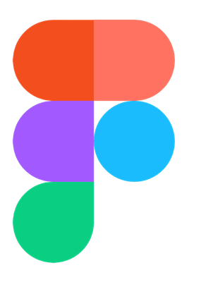

Craft Over Output
I'd rather ship one exceptional thing than ten mediocre ones. Quality is a choice I make at every step.
Depth creates impact
The Person Behind the Work
I build products, systems, and experiences that turn complex ideas into useful, human-centered solutions. My work blends product leadership, AI, design, and education with a focus on practical impact.
My Story
I was born in Brooklyn, NY and raised in New England, where I grew up driven by three things: helping people, building things, and video games. Those passions didn't fade, they evolved.
Today, I bring together Product Management, Game Development, Creative Direction, and AI to design experiences that feel intuitive, impactful, robust, and memorable.
My career spans military service, indie game studios, enterprise product teams, and solo creative ventures. Along the way, I've shipped mobile apps, launched digital products across multiple states, built brands, composed music, and created physical products, often late at night with lo-fi playing in the background. Each discipline strengthens the others.
Today, I'm focused on the intersection of AI, wellness, and interactive tools, building intelligent systems that help teams move faster, think better, and punch above their weight.
A Few Things About Me
Credentials & Toolkit
Certified Scrum Product Owner (CSPO)
Scrum Alliance
AI for Product Owners
Scrum Alliance
Scrum Foundation (SFPC)
CertiProf
Unity

Figma
Python
Jira
Tableau
Power BI
GA4
SQL
ClickUp
Professional History

Achieved the rank of Sergeant leading combat and humanitarian aid operations across three combat deployments, then trained thousands of incoming officers in tactics, weapons handling, and leadership fundamentals — delivering high-pressure team leadership and mission-critical decision-making throughout.

What Drives Me
Honor, Courage, and Commitment shaped me first. Here's what I've built on top of that.
I'd rather ship one exceptional thing than ten mediocre ones. Quality is a choice I make at every step.
Depth creates impact
Products, games, brands. They're all systems. Understanding the whole helps you design better parts.
Bigger pictures make better solutions
The best solutions come from asking better questions. I stay curious even when I think I know the answer.
Questions open worlds
Process serves people, not the other way around. Great teams beat great frameworks every time.
People build extraordinary things
Thinking is important. But a rough prototype teaches you more than a perfect plan every time.
Progress over perfection
Every color, word, and feature should earn its place. I don't add things, I solve for outcomes.
Less noise, more meaning